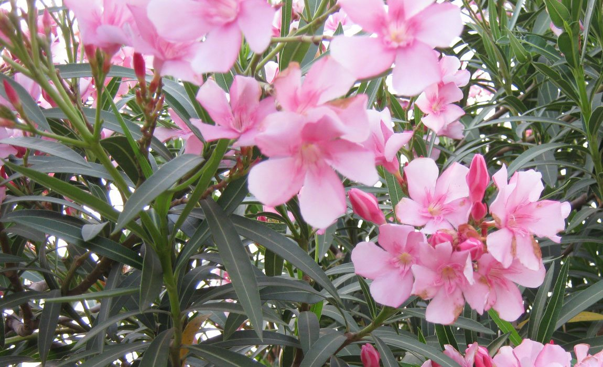

Ayuntamiento de Senés
JARDIN BOTANICO DE ESPECIES AUTOCTONAS DE SENES

Nerium oleander

La adelfa (Nerium oleander) es un arbusto perenne muy característico de las zonas mediterráneas, ampliamente utilizado tanto en jardinería como presente de forma natural en ramblas, cauces y zonas húmedas temporales. Destaca por su gran capacidad de adaptación y su resistencia a condiciones adversas.
Puede alcanzar entre 2 y 4 metros de altura, formando masas densas y muy ramificadas. Sus hojas son alargadas, coriáceas y de color verde intenso, mientras que sus flores, muy vistosas, pueden ser de color blanco, rosa o rojo, apareciendo en abundancia durante gran parte del año.
La adelfa es típica de regiones mediterráneas, donde crece de forma natural en cauces de ríos, ramblas y zonas con cierta disponibilidad de agua, aunque también soporta periodos prolongados de sequía.
En entornos como la Sierra de los Filabres, aparece en zonas donde el agua es estacional, formando parte de la vegetación de ribera y contribuyendo a la estabilidad de los márgenes.
La adelfa contiene compuestos químicos muy potentes, algunos de ellos con propiedades medicinales estudiadas, especialmente en el ámbito cardiovascular. Sin embargo, es una planta altamente tóxica, por lo que su uso debe ser siempre controlado y especializado.
Tradicionalmente no se ha utilizado de forma doméstica debido a su toxicidad, aunque ha despertado interés en la investigación científica por sus principios activos.
La adelfa simboliza la belleza y la resistencia, ya que combina una floración espectacular con una gran capacidad de adaptación a condiciones difíciles. En muchos lugares se asocia con la protección y la fortaleza.
También representa el contraste entre apariencia y realidad, debido a la belleza de sus flores frente a la toxicidad de la planta.
En Senés, la adelfa no se ha utilizado ya que es una planta completamente tóxica, se conocen casos de animales que despuerde morderla y tirarla de la boca sin ingerirla, han llegado a morir. Algunos agricultores la utilizaban como insecticida para el pulgón de las plantas.
Hay una leyenda popular sobre ellas, que las abejas toman su flor la mañana del día de san Juan.
La adelfa florece principalmente desde finales de primavera hasta finales de verano, produciendo abundantes flores de colores llamativos. En climas suaves, puede prolongar su floración durante más tiempo.
Todas las partes de la adelfa son tóxicas, incluso en pequeñas cantidades, lo que la convierte en una de las plantas ornamentales más peligrosas si se manipula sin conocimiento.
A pesar de ello, es muy utilizada en jardinería urbana por su gran resistencia a la contaminación, la sequía y las altas temperaturas.